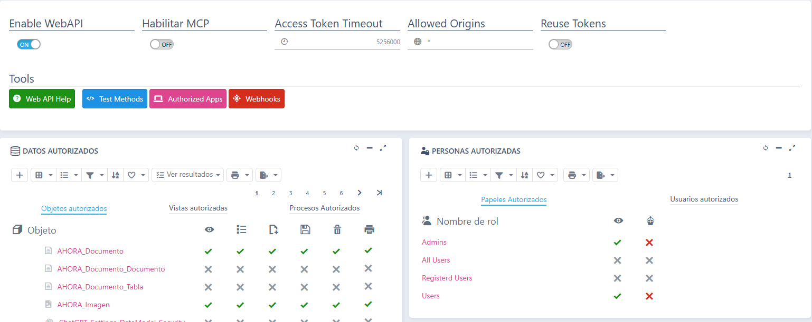

Asistentes de IA conectados al SAT (MCP)¶
Puedes conectar al SAT tu propio asistente de IA (Claude, ChatGPT, Gemini o cualquier otro compatible con MCP, el Model Context Protocol) y preguntarle por tus datos en lenguaje normal: «¿qué partes hay previstos para hoy?», «¿qué tiene abierto Juan?», «¿cuántos partes ha tenido Acme este trimestre?», «crea un parte para Acme: revisión de la caldera, mañana a las 9».
El asistente entra con tu usuario del SAT y ve y hace exactamente lo mismo que tú en la aplicación, nada más.
No es el asistente de la app móvil
La app móvil trae su propio asistente para los técnicos: ver ¿Sabías que dispones de un agente IA offline para la gestión de partes?. Esta página trata de lo contrario: tu asistente de siempre, fuera del SAT, trabajando con los datos del SAT.
Qué le puedes pedir¶
El asistente conoce el SAT: sabe qué son los partes, sus estados y sus líneas (mano de obra, material, números de serie y desplazamientos), los técnicos, los almacenes y sus envíos de material, porque el SAT le da una descripción de cada cosa. Algunos ejemplos:
| Le pides | Qué hace |
|---|---|
| «¿Qué partes hay previstos para hoy?» | Lista los partes abiertos que empiezan hoy, agrupados por técnico |
| «¿Qué partes abiertos tiene Juan?» | Los partes abiertos del técnico, por prioridad y fecha |
| «Resúmeme el historial de Acme» | Busca el cliente y cuenta sus partes de los últimos meses, por estado y por tipo |
| «¿Qué material hay en la furgoneta de Juan?» | El stock del almacén del técnico, con lo pendiente de recibir y de enviar |
| «¿Qué envíos de material faltan por actualizar?» | Los albaranes de envío pendientes, con el artículo, la cantidad y los almacenes |
| «Crea un parte para Acme: revisión de la caldera, mañana a las 9, para Juan» | Busca el cliente y sus contactos, te pregunta lo que falte y crea el parte (si tienes permiso de modificar) |
| «Hazme un tablero de los partes de este mes» | Cifras, desgloses y tablas; en Claude web o escritorio, como un tablero interactivo |
Además, el SAT ofrece al asistente unas tareas típicas, que la mayoría de asistentes muestran como atajos:
- Crear un parte
- Partes previstos para hoy
- Partes abiertos de un técnico
- Historial de un cliente
- Stock de un almacén
- Envíos de material pendientes
También puede lanzar los procesos del SAT, como solicitar material o asignar un almacén a un técnico. Antes de lanzar uno, te dice qué va a hacer y te pide confirmación.
Activarlo (administrador)¶
Lo hace un administrador en Work Area › Admin Work Area › Security › WebAPI, la misma pantalla que la Web API:


- Enciende Enable WebAPI y Habilitar MCP. Los dos vienen apagados: conectar asistentes de IA es una decisión de cada empresa.
- En Personas autorizadas, marca la columna del robot en los roles (pestaña Papeles autorizados) o en los usuarios (pestaña Usuarios autorizados) que pueden conectar un asistente. Es un permiso aparte del de la API (el ojo). De serie, ningún rol lo tiene: solo el usuario administrador.
No hay que preparar nada más: el SAT ya trae publicados sus objetos, vistas y procesos, con sus descripciones y las tareas típicas.
Conectar tu asistente¶
- En la aplicación, abre tu menú de perfil y elige Conectar un asistente. Copia la dirección que aparece: es la de la aplicación terminada en
/mcp, por ejemplohttps://sat.miempresa.com/mcp. -
Añade esa dirección en tu asistente:
- Claude (web o escritorio): Ajustes › Conectores › Añadir conector personalizado.
- ChatGPT, Gemini y otros: en su apartado de conectores o aplicaciones, con la misma dirección.
- Claude Code:
claude mcp add --transport http sat https://sat.miempresa.com/mcp.
Los asistentes en la nube (Claude web, ChatGPT…) se conectan desde internet: la aplicación tiene que estar publicada con HTTPS y accesible desde fuera.
-
El asistente abre el navegador: entra con tu usuario del SAT y verás la página de consentimiento, con quién pide acceso y qué se le concede. Pulsa Permitir. Si desmarcas Modificar datos, el asistente solo podrá consultar.
Qué ve el asistente¶
Lo mismo que tú, con las mismas reglas que la aplicación y la Web API:
- Solo las operaciones que el SAT permite por la API: por ejemplo, puede crear y modificar partes, pero no clientes.
- Si le pides algo que tu usuario no puede hacer, te dice que no tienes permiso y no cambia nada.
- Si el SAT o el ERP rechazan una operación (por ejemplo, solicitar material con el mismo almacén de origen y de destino), el asistente te explica el motivo.
Revisar y cortar la conexión¶
- Tus asistentes: menú de perfil › Asistentes conectados. Con Revocar se corta la conexión al momento; para volver a usarlo, conéctalo de nuevo.
- El administrador, en el panel de control, puede ver el Uso del MCP (llamadas por día, por herramienta y por persona, y las rechazadas) y las Sesiones MCP abiertas.
- Si se apaga Habilitar MCP, ningún asistente puede conectarse, desde ese momento.
Si algo no sale¶
| Lo que ves | Por qué | Qué hacer |
|---|---|---|
| El asistente no conecta y la dirección da error 404 | Habilitar MCP o Enable WebAPI están apagados | Pide al administrador que los encienda |
| Conectar un asistente o la página de consentimiento dicen que no tienes permiso | Tu rol o tu usuario no tiene la columna del robot | Pide al administrador el permiso |
| Claude web o ChatGPT no llegan a la aplicación | La aplicación no es accesible desde internet con HTTPS | Consúltalo con quien administra el servidor |
| El asistente se niega a crear o modificar | Desmarcaste Modificar datos al conectar, o tu usuario no puede hacerlo en la aplicación | Revoca la conexión y vuelve a conectar marcando Modificar datos |
Para todo el detalle (ajustes, límites de llamadas, auditoría), consulta la ayuda de Flexygo, apartado Ayuda › Asistentes de IA (MCP).